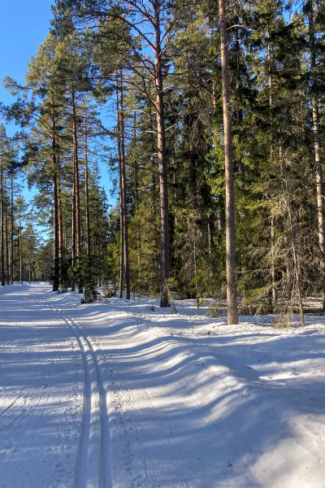

Enjoy the Outdoors
However you prefer to spend your time outdoors, Skelleteå has something for you. If you're here in the winter, try alpine or cross-country skiing at Vitberget. During the summer, enjoy biking or hiking. There is also fishing, skating, snowshoing, and boating. You're sure to find something you love.
Current Weather

- Temperature:7 °C
- Conditions:Partly cloudy
- Wind:SE at 14.4 kmh
There are five rivers in Skellefteå, three of which are classified as wild salmon rivers. Such a concentration of salmon waters cannot be found anywhere else in Sweden - and the crown jewel is Byske River. The Byske River is currently experiencing a positive trend. In 2015, more than 5,000 salmon passed through the Fällfors fish waterway. The year before that, nearly 6,000. These are impressive numbers and they have generated a lot of interest in the Byske River in recent years.
"Skellefteå offers one of Sweden's best cross-country skiing systems up on Vitberget for those who want to go cross-country skiing. There is a wide range of easy tracks for families and exercisers, but also really tough and hilly ones for us who train hard and compete. In addition, there are about 30 additional tracks around the municipality that are run by associations and enthusiasts, which gives more people the opportunity to go cross-country skiing regularly. "
-- Klas Nilsson, Skellefteå
There is plenty to see and experience on foot in Skellefteå, whether you want to walk 30 minutes or trudge for several days. Close to the city or on the coast. Along our beautiful trails and pristine nature reserves. There are picnic areas and noteworthy sights by most of the trails, which are anywhere from 3 to 80 km long. It's time to dust off your backpack and your hiking boots and plan for a real hiking spree.